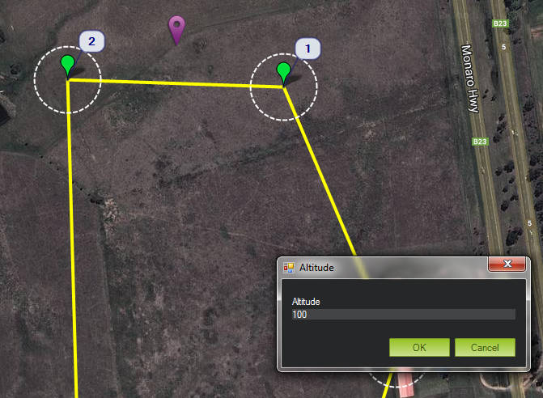

Rally Points¶
Overview¶
Ordinarily when a plane or copter enters Return to Launch (RTL) mode (typically triggered by an autopilot failsafe), the default behaviour is to return to the Home point, but there are often cases when that can be undesirable. For example it may be an area full of people or property and a system running in RTL mode may very likely be in a state that merits extreme caution! It is also possible that the flight plan is large enough that should the aircraft enter RTL mode it is undesirable to traverse all the way back to the point of takeoff.
For this reason we now support the creation of multiple Rally Points. Should an aircraft enter RTL and Rally Points have been defined then it will proceed to the closest Rally Point, rather than proceeding to the Home position. Plane will then loiter at that location, and Copter will perform an automated landing there.
{kind=link}
Setting Up Rally Points¶
The following steps are for specifying Rally Points in Mission Planner:
Rally Point latitude and longitude.To set a Rally Point’s location, right click on the Flight Plan map, and select Rally Points > Set Rally Point on the resulting pop-up menu (note that this ONLY work in the Flight Plan screen, not the Flight Data screen):

The Rally loiter altitudes need to be specified (note that the default altitude for Rally Points is the default waypoint altitude value and is relative to the home location):
Repeat for all desired Rally points!
Upload to the vehicle by selecting Rally Points > Upload from the right-click popup menu
{kind=link}
{kind=link}
The following should be considered when using Rally Points:
- If using a geofence: its HIGHLY recommended the Rally Points you intend to use at your event are inside the geofence.
- Make sure Rally Point altitudes are high enough to clear terrain and buildings.
- Because of the limited flash memory size on the APM2.x hardware the number of Rally Points is restricted to 10 on Plane and 6 on Copter – this limit may be expanded on other platforms such as Pixhawk in the future.
- On Plane, loiter radius for a Rally Point is the same as all other loiter points; determined by the WP_LOITER_RAD parameter.
- The ALT_HOLD_RTL RTL_ALT parameters are NOT used with Rally Points! The aircraft will transit to the Rally Point at the altitude specified when adding that point.
The following MAVLink parameters control Rally Point behavior:
- RALLY_LIMIT_KM is the maximum distance a Rally Point may be from the aircraft to be considered for an RTL event. If all Rally Points are greater than this distance from the aircraft, then the Home location is used for RTL events (at altitude ALT_HOLD_RTL) This parameter is to prevent fly offs if Rally Points have been specified for multiple flying fields. This parameter can be disabled if set to 0.
- RALLY_INCL_HOME allows Home to be included in the RALLY points, allowing it to return to home if closer than any RALLY point.
- RALLY_TOTAL is the number of Rally Points currently specified. This parameter will be set for you by your ground control station (e.g., Mission Planner) when you add and remove Rally Points. IT IS HIGHLY UNLIKELY YOU WANT TO SET THIS PARAMETER MANUALLY AND IT IS PROBABLY UNSAFE TO DO SO. RALLY_TOTAL should be 0 if you have specified no Rally Points and in this case the Home location will be used for RTL events.
Example Flight¶

Flight in which RTL was commanded nearwaypoint. Plane began loitering about the southernmost RallyPoint.
Appendix¶
The RALLY fields present in a rally point file are as follows:
- Lat: Latitude of Rally Point
- Lon: Longitude of Rally Point
- Alt: AGL altitude of Rally Point as referenced from the point where the copter/plane got a GPS lock.
- Break Altitude: Specific to NPS fixed wings; the point at which to break out of a loiter and fly toward the landing waypoint. Also in AGL.
- Desired Heading: Whether to verify that the plane is going the correct heading before breaking out of the loiter (see break altitude).
- Flags:
- 1 = FAVORABLE_WIND. Flag set when requiring favorable winds for landing. We never got around to implementing this at the Naval Postgraduate School, but basically whether or not we are required to land with the aircraft facing into the wind.
- 2 = LAND_IMMEDIATELY. Flag set when plane is to immediately descend to break altitude and land without GCS intervention. Flag not set when plane is to loiter at Rally point until commanded to land.